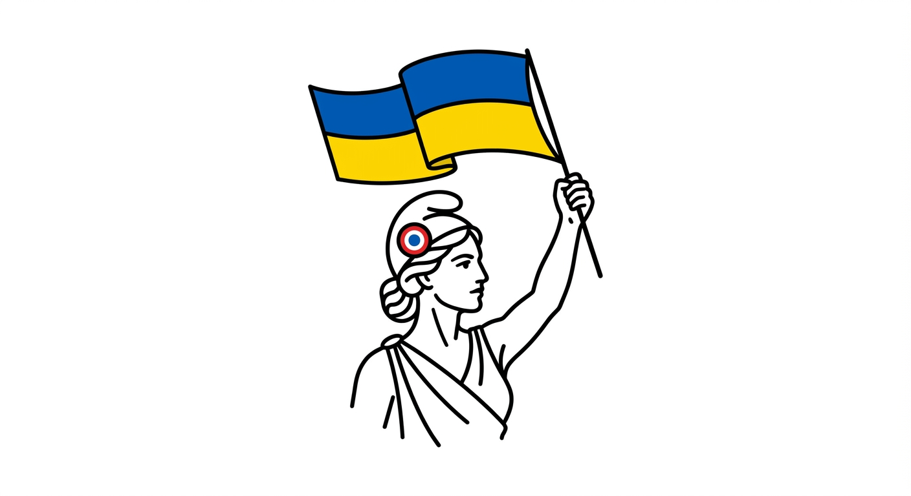
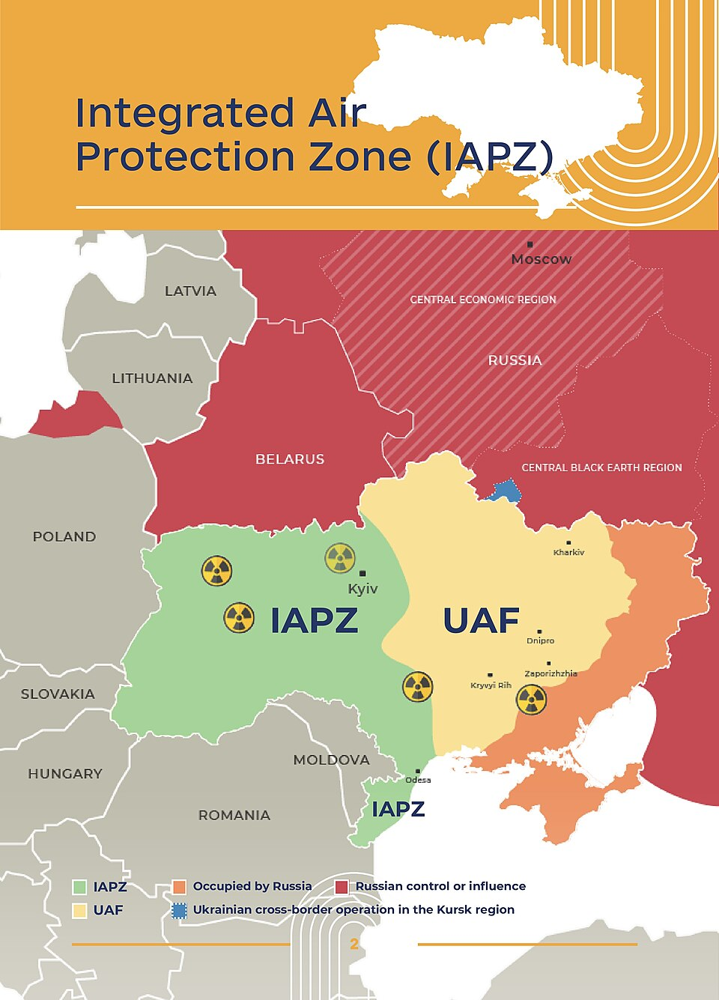

CCEU
Collectif Citoyen Engagé pour l'Ukraine
Porter la voix de l'Ukraine au cœur des décisions politiques
Notre manifeste d’action
Dans un monde fragmenté par les crises, la France doit être le catalyseur d'une union indéfectible entre les démocraties.
Parce que la liberté de l'Ukraine est le rempart de notre propre sécurité, nous, citoyens de France, nous unissons au reste de l‘Europe pour garantir à l'Ukraine sa place souveraine à la table des nations. Ensemble, par une action coordonnée à l’échelle européenne, nous agissons pour empêcher l’impérialisme russe et les tentations isolationnistes de dicter notre destin commun.
Soutenir la victoire totale de l’Ukraine
Mobiliser l’opinion et les décideurs politiques pour maintenir et intensifier l’effort de guerre allié. Nous plaidons pour une aide militaire et financière massive, coordonnée avec nos partenaires européens et américains, jusqu'à la libération de tous les territoires occupés depuis 2014.
Accélérer l’intégration européenne
Faire de l’adhésion de l’Ukraine à l’UE et de son ancrage dans l'architecture de sécurité occidentale une priorité politique en France. Nous valorisons l’état d’esprit ukrainien, actif, positif, tourné vers l’avenir, comme un atout majeur pour la transformation et la vitalité de l'europe.
Bâtir une force stratégique commune
Pousser la France à mener l'émergence d'une défense européenne puissante, capable de résister à toute forme d’impérialisme. L’Europe doit devenir un partenaire fort et autonome, capable de protéger ses valeurs aux côtés de ses alliés historiques.
Sanctuariser nos démocraties face à l’ingérence
Démasquer et combattre les réseaux de propagande russes qui tentent de fracturer nos sociétés. En collaboration avec nos alliés internationaux, nous travaillons à démanteler la désinformation à sa source pour protéger l’intégrité de nos institutions et de nos médias.
Lutter contre le repli sur soi européen
Basés en France, nous sommes le pont entre l'engagement citoyen national et la stratégie internationale. Nous agissons directement auprès des élus et des institutions françaises pour accélérer les processus législatifs en faveur de la victoire de l'Ukraine.
Parce que notre force réside dans la cohésion, nous travaillons en synergie constante avec nos partenaires à travers l’Europe et les voix de la société civile transatlantique partageant nos valeurs de respect et de souveraineté. Notre mission est de veiller à ce que la France apporte sa juste contribution, avec humilité et détermination, aux côtés de ses pairs, au sein d’une Europe unie et solidaire pour la stabilité du continent.
Actions sur le terrain
Nos missions en cours

Protéger le ciel des Ukrainiens
Nous travaillons à faire de SkyShield une réalité. Permettre à l'Ukraine de vivre sans la menace des drones attaquant des civils et des infrastructures jour et nuit serait un immense pas en avant pour avancer vers la fin de la guerre.
Rejoindre la mission SkyShield →Stopper la flotte fantôme
Trouver des partenaires capables d’interférer avec la flotte des pétroliers russes circulant en mer Baltique et mer du Nord et d’obliger les pays à appliquer les lois en vigueur et à prendre d’assaut et immobiliser chaque navire.
Rejoindre la mission Flotte Fantôme →